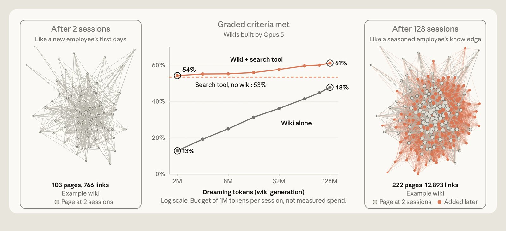
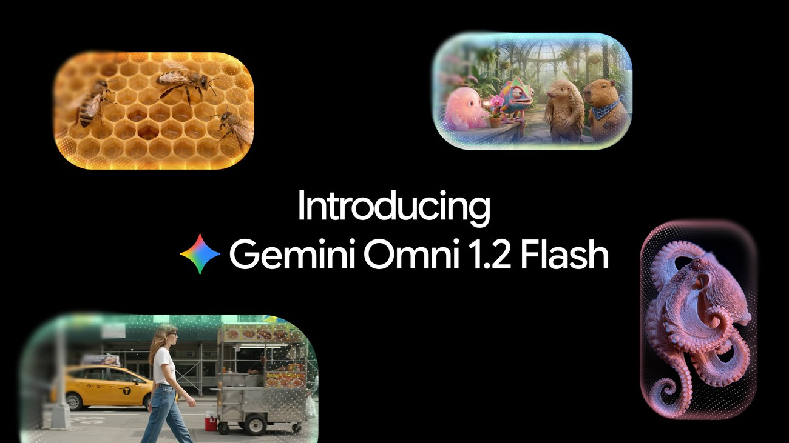

头条 一
 图片来源：TechCrunch
图片来源：TechCrunchRamp 数据显示，企业 token 支出在 8、9 月只增长 1.5%，7 月是 42%，而用量仍在涨。Ramp 经济学家把原因归到降价和更会控成本：OpenAI 9 月把 GPT-6 Sol 与 Luna 的 API 价格砍半，Anthropic 也降价。10 月支出回升 8.9%。
据 Bloomberg，Anthropic 的 IPO 估值预期已从 2 万亿美元降到约 1.1 万亿至 1.3 万亿；OpenAI 以 1.25 万亿估值已募到 110 亿美元，原定目标是 300 亿。
来源：TechCrunch
头条 二

图片来源：AnthropicAnthropic 工程博客称，Claude 在空闲时回看会话日志，纠正写错的记忆、搭建链接的 wiki。自测里，对约 35 万份文档做 128 轮“做梦”，单用 wiki 的得分从 13% 升到 48%；wiki 加搜索从 54% 升到 61%，单用搜索为 53%。
Pokémon 评测里，错误笔记被改正后，Claude 1935 步到达下一座城市，没改的版本绕回起点城镇。以上均为 Anthropic 自测；记忆要靠额外算力维护，博客也承认。
来源：Anthropic
头条 三

图片来源：GoogleGoogle 周四发布 Gemini Omni 1.2 Flash，视频单次上限从 10 秒升到 15 秒，可按秒设定 3 到 15 秒，支持多轮对话修改同一段。720p 价格为每秒 0.07 美元，比 1.1 版降 30%，已在 Gemini API 与 Google Cloud 正式可用。
Google Vids 里用户可免费生成 15 秒片段，Gemini 应用先向 Ultra 订阅用户开放；降价与拉长一起来，对照头条 1，价格战已经打到视频生成。
来源：Google
用量在涨、支出不涨，说明 AI 公司卖的不再是“多用”，而是“用得便宜”。估值要靠下一个像编程那样的大用途来撑。
“做梦”本质是花算力换准确度：把旧日志重读一遍，改掉写错的笔记。这笔账划不划算，要看你的智能体犯的错贵不贵。
Gemini Omni 降价的同时把片段拉长，说明视频生成的竞争点已从“能不能做”挪到“每秒多少钱”。